← 返回阅读库 · 原论文目录
论文讲解阅读文档 · 新模型 · v065
Mobile-Former Bridging MobileNet and Transformer[2108.05895]
视频时长 00:13:48；讲解文字 6,772 字符；提取讲解画面 55 张。按视频原顺序阅读，每段文字保留时间戳。
文字来自整段视频的自动语音转写，按自然停顿分段，并与 PPT / 论文页面 / 演示画面对齐。未将讲解压缩为摘要；术语、数字和口述公式请结合画面及原论文核对。 阅读稿已校正规范部分明确术语误识别；原始逐字稿和每处修改记录另行保留。
讲解画面为源视频截图（640×360），不是可编辑 PPT 文件。全片按每秒 2 帧扫描内容变化，逐步展开页保留；连续动画保留代表画面。清晰度受源视频限制。
下载完整资料包 · 含离线 HTML、PDF、Word、全部 PPT 画面和字幕。
原论文与材料
Mobile-Former: Bridging MobileNet and Transformer · 下载完整 PDF（15 页）
按时间阅读
00:00:00–00:00:11 · 画面 001
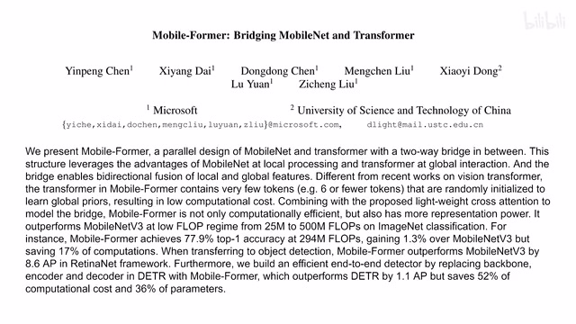
00:00:00–00:00:11 · 画面 001大家好,今天我们来快速说一篇论文 Mobileformer, Bridging MobileNet and Transformer 为什么要把这个 MobileNet 和 Transformer 搞在一起呢?作者这里有一个比较充分的理由 MobileNet 是一个轻量的 CNN 我们之前出了一系列的视频去介绍它而 Transformer 经常受困于我们这个图像的 token 的数量太多导致我们处理起来需要耗费很大的资源
00:00:11–00:01:39 · 画面 002
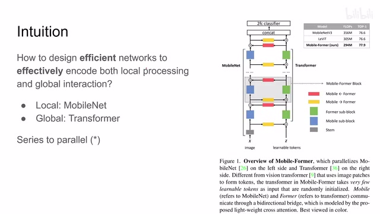
00:00:11–00:01:39 · 画面 002那么作者呢就是希望把这两个东西有机的结合起来能够既保留我们的 local feature 就是局部的这些信息同时呢以一个较低的成本去维护这个 global 也就是全局的整个图像的这个相关的信息然后呢让我们这个网络跑得尽量的快那么为了融合这两个东西呢这里呢作者提出了说这个把我们原来的这种串联的结构改成我们这种并联的这种并行的这种结构那这里我这个平行是打了一个信号为什么呢看到它整个这个结构你看呢它有两支一支是这个 MobileNet 一支是这个 Transformer 这两个分支它们的方向大体上是平行的这个没问题但是如果你仔细看呢它们之间存在双向的这个信息的交互这也就意味着这两支并不能是并行的进行计算它们只是在这个拓扑结构上是并行的两支而已
那么这样做呢相对于传统的方法就是我先从 low level 的这个 feature 从一个这个局部的这个 feature 开始往上提最后构建出一个全局的 feature 相对于这种样的串接的结构呢本文的方法呢从一开始就维护了这个局部和全局的这个信息而且他们之间呢有这个信息的传递那具体来说这边 mobile net 作者的改动并不是非常大但是也有改动我们后面会聊到然后这边 transformer 这个部分呢作者呢
00:01:39–00:02:02 · 画面 003
00:01:39–00:02:02 · 画面 003大量的减少了里面的 token 的数量比如这里呢作者只保留了 6 个这个 token 他希望这 6 个 token 呢去描述全局的这个图像的信息而且这个 token 呢也不是从这个图像的 patch 产生的而是直接随机的 initialize 然后呢这是一些 learnable 也就是说他会随着我们的学习呢不断进行更新那么当然最重要的呢就是这个 low cost two way bridge 也就是你看到从这个 mobile net 这个分支到 transformer
00:02:02–00:02:03 · 画面 004
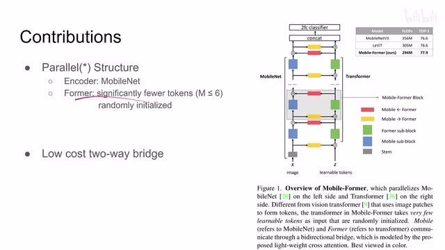
00:02:02–00:02:03 · 画面 00400:02:03–00:02:11 · 画面 005
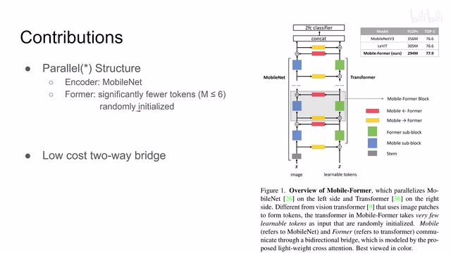
00:02:03–00:02:11 · 画面 00500:02:11–00:02:12 · 画面 006
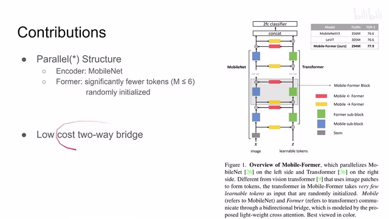
00:02:11–00:02:12 · 画面 00600:02:12–00:02:23 · 画面 007
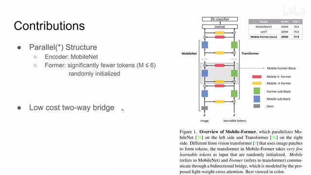
00:02:12–00:02:23 · 画面 007从 Transformer 再到 MobileNet 这样一个双向的这个传递，那重点呢我们来看一下这个环节。那首先呢我们把这个 Bridge 它连接的部分呢前后我们都给它放大出来，这个呢就是刚刚这里的这样一个模块。那其实它的核心呢就是一个轻量的这个 Cross Attention。所谓 Cross Attention 呢，就是你的这个 Query 和这个 Key Value 它们来自不同的地方。
00:02:23–00:02:24 · 画面 008
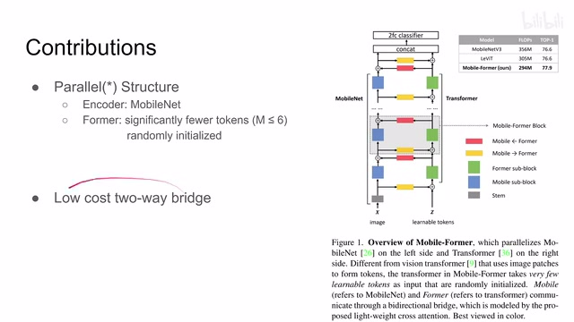
00:02:23–00:02:24 · 画面 00800:02:24–00:02:25 · 画面 009
00:02:24–00:02:25 · 画面 00900:02:25–00:02:32 · 画面 010
00:02:25–00:02:32 · 画面 01000:02:32–00:02:35 · 画面 011
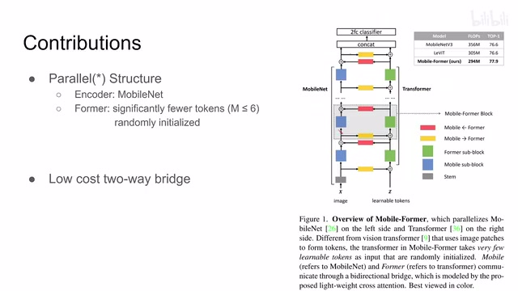
00:02:32–00:02:35 · 画面 01100:02:35–00:02:53 · 画面 012
00:02:35–00:02:53 · 画面 012那具体来看呢你从这个 mobile 这个分支到这个 former 这个分支的过程我们来看他拿了什么输入的这个 x 呢它是这个 local feature map 对吧它的尺寸呢是这个样子的 hw 呢就是空间尺度上这个 feature 这一看就是 cnn 给出来的嘛对吧然后呢 z 这边呢是 global tokens 就是我们之前说的六个六个然后长度为 d 的这么一个 vector 从 mobile 到 former 过程呢它的本质上呢是做了一个标准的 attention 但是这个 attention 呢
00:02:53–00:02:54 · 画面 013
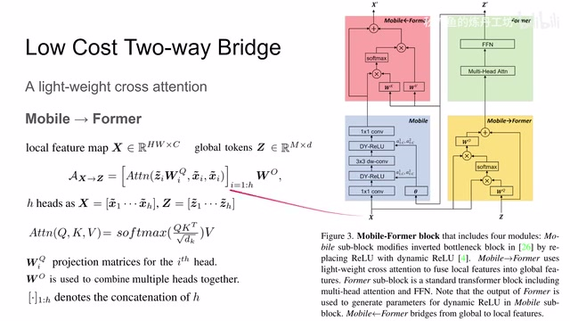
00:02:53–00:02:54 · 画面 01300:02:54–00:03:02 · 画面 014
00:02:54–00:03:02 · 画面 01400:03:02–00:03:03 · 画面 015
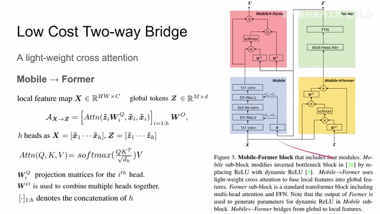
00:03:02–00:03:03 · 画面 01500:03:03–00:03:21 · 画面 016
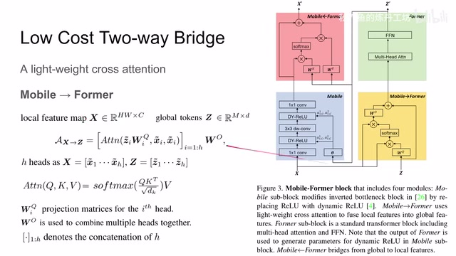
00:03:03–00:03:21 · 画面 016它的 key 和 value 来自于我们的 x，它的 query 来自我们的 z。更具体来看，我们发现 key 和 value 它甚至没有做进一步的 projection，它直接把我们的 x 里面的东西拿出来用了，直接就是既是 key 又是 value。而这边 query 这里用 wiq 做了一个 projection，这个是它最核心的 attention。
00:03:21–00:03:22 · 画面 017
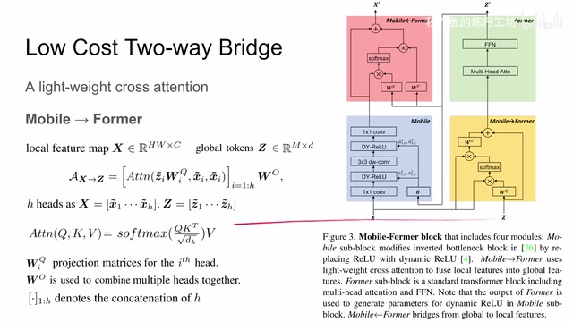
00:03:21–00:03:22 · 画面 01700:03:22–00:03:30 · 画面 018
00:03:22–00:03:30 · 画面 01800:03:30–00:03:31 · 画面 019
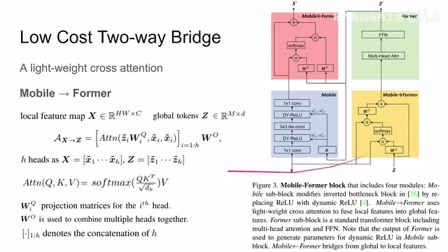
00:03:30–00:03:31 · 画面 01900:03:31–00:04:58 · 画面 020
00:03:31–00:04:58 · 画面 020那这时候有朋友说这个下标怎么回事呢因为我们这里不仅是 attention 而是一个 multi-head self-attention 所以呢这个 i 呢表示不同的这个 head 也就是说你把这些输入沿着这个 c 这个通道给它切成这个 h 份对吧一小份一小份他们自己做这个 self-attention 那最后出来这个 attention 这个 metrics 之后呢和这个 value 也在结合那么因为我们的 query 的尺寸是跟这个 z 走的所以这个 attention 算出来它的尺寸呢跟这个 z 是一样的
那当然这里呢你可以看到因为我们这里算的是 multi head 嘛最后我们要把它串接起来就是就是这个方口号这个符号啊还是把它串成这个深度为 d 的这么一些 vector 然后呢再经过这个 wo 做了一个另一步一个投影你可以把它就认认为这是一个 linear layer相当于用它把我们不同的 head 之间它们的信息呢给它们相互交互一下那最后呢别忘了这里有个 skip connection 把我们的这个 z 严封不动的加到我们输出好的这个东西上来那这一块呢就是这个 mobile former 它呢你可以理解为是一个简化版的这个 transformer 的 block 前面这个 multi head self-attention 呢把这个 project 到 value project 到 key 这个部分呢就省去了同时呢这个 key 和 value 是来自于另一个 branch
这个呢是这个 mobile 的 former，那么当然到了这个 former 之后呢，我们就可以走这个 transformer block 了。那走完这个 transformer block 之后呢，我们就要从这个 former 这个 branch 回到这个 mobile 这个 branch。你可以看到呢，我们把这个 token 拿出来，我们先忽略这一根连线，我们先忽略它，拿到这里来发生了什么事呢？同样也是做 multi-head self-attention，这里的 i 也是一个 head。那在这里面这个 attention 呢，这里的这个 key 和这个 value 就变成了由 z 来提供了。
00:04:58–00:05:31 · 画面 021
00:04:58–00:05:31 · 画面 021你可以看到他用 wk 和 wv 去做这个 projection 然后呢和我们就是 query 就是这个 x 啊直接就拿过来了不用动了啊做的这个 self attention 跟前面一样的那么同样的完事之后呢也是串接起来加上这个 skip connection 只过之后呢就没有像这边这个 w o 一样再做一个 linear projection 呢为什么呢因为马上接着往下你又要过这个 mobile netmobile net 他会把我们这个 channel 之间的信息给融合起来所以这一步呢就不用
00:05:31–00:05:32 · 画面 022
00:05:31–00:05:32 · 画面 02200:05:32–00:05:33 · 画面 023
00:05:32–00:05:33 · 画面 02300:05:33–00:05:37 · 画面 024
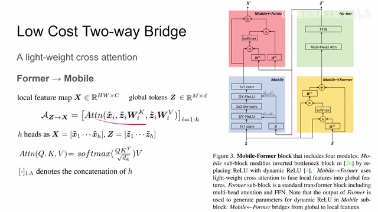
00:05:33–00:05:37 · 画面 02400:05:37–00:07:00 · 画面 025
00:05:37–00:07:00 · 画面 025而对于这里呢而对于这个 transformer 这个 branch 呢你这里这个 self multi-head self-attention 出来马上又接着做个 multi-head self-attention 中间之间这个地方如果你去到这个 W 那么这个 head 之间它们是没有交流的所以呢这里呢有这么一个部分这是一个小的细节那么通过这样一个 block 呢我们从这个 x 这个 local feature map 对吧到了这个 global 的这个 tokens 啊做一些 global 相关的东西做完之后呢更新完这 global 呢再把我们这些 global 信息输回到我们这个 local feature map 里面这样一层呢就完成了这个更新同时呢这 global 的信息呢和这个 local 的信息呢都分别保留了起来那这个呢就是本文提出的这个 parallel 的这个结构
那么当然还是因为本文的初衷呢是尽量高效的去做各种运算所以看到他这里做了很多的简化从一开始他用这个 mobile net 作为我们的 backbone 你就可以知道他是完全是为了提升效率而产生的那这里呢把这个 attention 的这个 key 和 value 的这个 projection 都去掉了这里把这个 query 的 projection 都去掉了对吧你可以看到他处处的是有意在减少这个模型的这个计算量此外呢你像这个 transformer 和这个 mobile net
00:07:00–00:07:42 · 画面 026
00:07:00–00:07:42 · 画面 026这两个 block 呢也不能置身事外他们呢也要减少计算负担比如像这 transformer 里面这个 ffn 里面原来呢我们比如说这个输入的 token 的长度是 d 它中间这个 hidden layer 的长度就是 4d 现在呢给它压缩成了 2 而这个 mobile net 里面呢这个原来用的是 relu 作为这个激活函数，那现在呢换成了这个 dynamic relu，这一点并不是为了节约计算，它增加了计算，但是呢极大的提高了我们这个模型的表达能力，那当然这里又有一个信号，为什么呢，你可以看到正经的 dynamic relu 呢，它是应该是从本地的这些根据这个 feature 来提信息来去更改这个激活函数的形状
00:07:42–00:07:43 · 画面 027
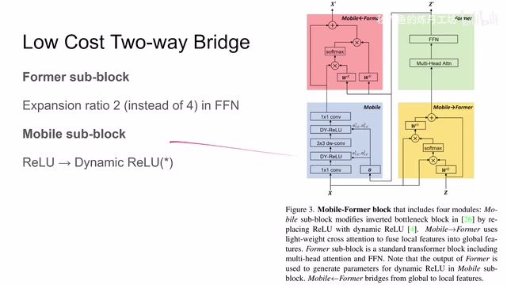
00:07:42–00:07:43 · 画面 027而这里呢，是因为作者的设计中呢，使用了这个 formertransformer 过来的这些信息来去更改这个激活函数，所以呢，它是这个 dynamic ReLU 上面的一个小的改进。那么我们具体来看这一块，那么 dynamic ReLU 呢，它来自于这篇文章一个 ECCV 啊，它的核心跟这个 SENET 其实非常相似。你看这是我们的这个 ReLU 嘛，或者是 Leaky ReLU 对吧？你在正的地方它的激活的有一个斜率，负的地方有个激活的斜率。
00:07:43–00:07:55 · 画面 028
00:07:43–00:07:55 · 画面 02800:07:55–00:07:58 · 画面 029
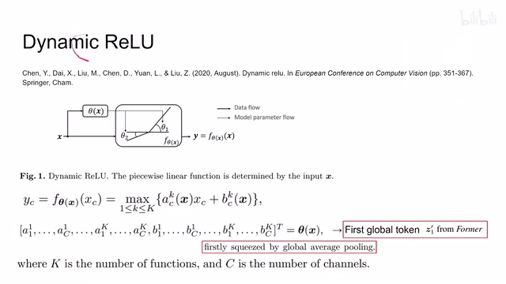
00:07:55–00:07:58 · 画面 02900:07:58–00:08:09 · 画面 030
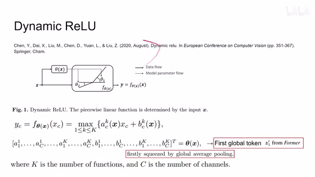
00:07:58–00:08:09 · 画面 030那么 dynamic ReLU 的思想呢，就是我这个激活这个斜率呢，我不是一个固定的值，我希望通过学习这个 tensor 里面的一些 feature 呢，来去动态的去调节这两个地方的斜率。你当然也可以说这是一种 attention 的机制。那具体来看呢，它把我们所有的这个 input 收集起来，然后呢，对我们的每一个 channel 预测出一个θ1 和θ2。来这里看到它用这个。
00:08:09–00:08:22 · 画面 031
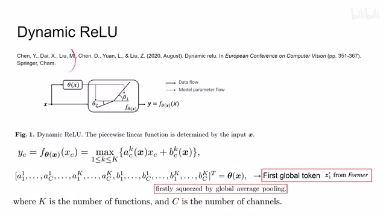
00:08:09–00:08:22 · 画面 03100:08:22–00:08:23 · 画面 032
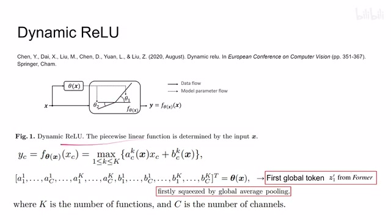
00:08:22–00:08:23 · 画面 03200:08:23–00:09:22 · 画面 033
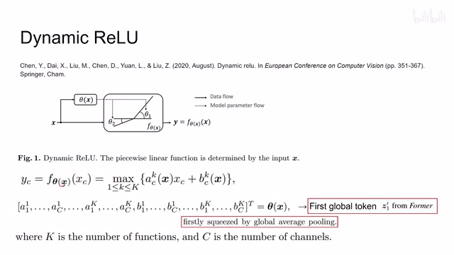
00:08:23–00:09:22 · 画面 033ac k 啊和这个 b c k 这个 c 是我们 channel 的编号吗，然后这个 k 呢是因为我们同时会预测很多个，然后做了一个 max，那么有了这样一个参数之后呢，我们把这个 channel 的这个 tensor 送到我们的这个 function 里面这个激光函数里面，然后呢得到我们这个 channel 的这个值，这里虽然我们只是在操作一个 channel，但是呢这个斜率的这个值是由整个的这个输入的这个 tensor 来决定的就是你在求 Theta 的时候，它的输入是拿取了整个 X 的信息，但是你转眼一想 ，Theta 它本质是一个两层的 MLP，你的输入的 X 进来它是一个很大的 Tensor，你不能说每一个像素大家都放到 MLP 里面来做这样的数量就太多了。所以这里做的事就是用 Global Average Pooling 求出来这一个值，就代表这一个 Channel，这样子就极大压缩输入的参数的量。那么到这里是经典的 Dynamic ReLU 它的操作。
00:09:22–00:09:24 · 画面 034
00:09:22–00:09:24 · 画面 03400:09:24–00:09:35 · 画面 035
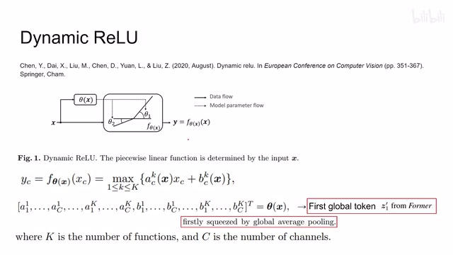
00:09:24–00:09:35 · 画面 035那么在文文中我们有一个优势，就是我们有 transformer branch，用它这里面的各种 token 来维护我们全局的信息的流。所以这里作者在计算 dynamic ReLU 的时候，他不是说去做 average pooling 把我们输入的 tensor 去做 average pooling 然后去算 theta ，他不是的，他直接把我们 transformer branch 里面第一个 token 的值拿出来。
00:09:35–00:09:36 · 画面 036
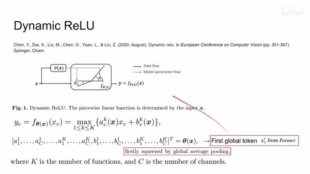
00:09:35–00:09:36 · 画面 03600:09:36–00:09:44 · 画面 037
00:09:36–00:09:44 · 画面 03700:09:44–00:09:45 · 画面 038
00:09:44–00:09:45 · 画面 03800:09:45–00:09:55 · 画面 039
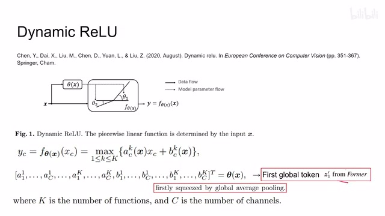
00:09:45–00:09:55 · 画面 039直接送到两次 mlp 里面，用它来规划出我们这个两个邪律来，那所以回到这里，你可以看到这个呢就是这一帧为什么会有这样一个链接它的一个由来，那这样子呢我们 mobileformer 里面最后的一块这个拼图就完成了，那么这个玩意儿呢你就把它当成 transformer 一样叠吧对吧，叠上几层就是我们整个的一个网络了，那么我们来看到这里这是最大的那个模型它的这个网络的结构还有参数
00:09:55–00:10:01 · 画面 040
00:09:55–00:10:01 · 画面 04000:10:01–00:10:02 · 画面 041
00:10:01–00:10:02 · 画面 04100:10:02–00:10:11 · 画面 042
00:10:02–00:10:11 · 画面 04200:10:11–00:10:12 · 画面 043
00:10:11–00:10:12 · 画面 04300:10:12–00:10:39 · 画面 044
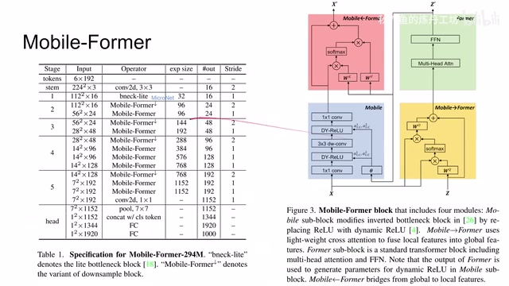
00:10:12–00:10:39 · 画面 044像里面这些卷积啊，Mobileformer 这些东西啊，这个全联子层啊，这些东西这个大家都知道了，我们就不细说了，感兴趣的朋友呢自己去追找他的参数看一下。那么这里呢还有一个这个 bneck-lite 啊，这个东西呢，它呢是来自于这个 MicroNet。那你这里呢把它理解成一个非常轻量的跟 MobileNet 很像的 CNN 的这么一个 block 就可以了。那么这个呢就是做这个 classification 的这么一个网络。
00:10:39–00:10:40 · 画面 045
00:10:39–00:10:40 · 画面 04500:10:40–00:10:43 · 画面 046
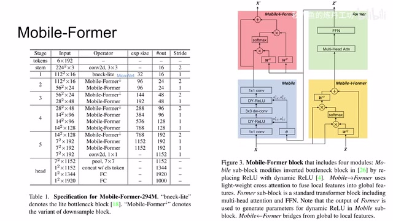
00:10:40–00:10:43 · 画面 046那么后面呢，当然作者也做了这个 object detection，就是你既然有了这么好的这个 encoder 结构对吧，那么为什么不做一下呢？那么这边呢，就直接把这个 DETR 的这个结构搬过来，具体的结构呢就在这里。但是你可以看到呢，这里有两种颜色不同的这个 mobile former 这个 block，一种呢作者叫 head，一种叫这个 backbone。那么这两种 block 呢，相对于标准版的这个 mobile former 这个 block 呢，它们有各自的改动。
00:10:43–00:10:52 · 画面 047
00:10:43–00:10:52 · 画面 04700:10:52–00:10:53 · 画面 048
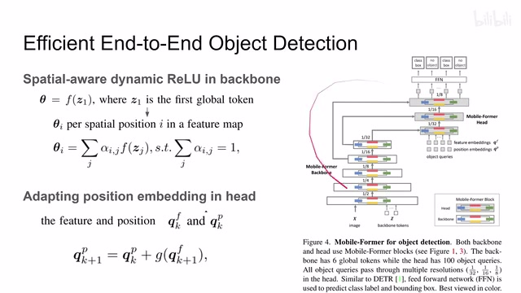
00:10:52–00:10:53 · 画面 04800:10:53–00:11:55 · 画面 049
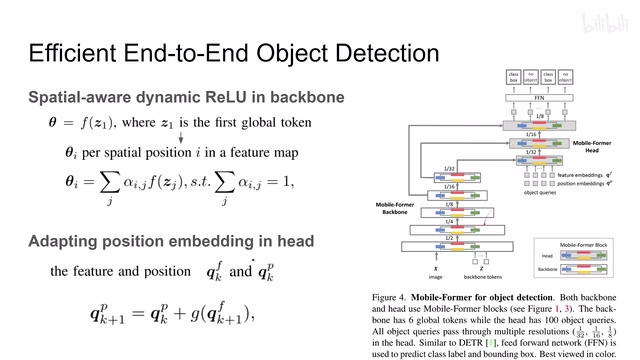
00:10:53–00:11:55 · 画面 049比如说这个，对于这个 backbone 来说呢，它是这个加了一个 spatial-wise 的 dynamic ReLU。那核心的就是原来我们是只用第一个这个 global token 预测出这个 theta，然后给每一个 channel 来用，但是每一个 channel 呢用的是同一种这个激活函数。那现在呢，这里更进一步，我的这个每一个 spatial location、spatial position 也就是里面的每一个像素啊，我都有不同的这个激活函数。同时呢，你可以看到它的这个展大师呢。
我们的每一个 token 都去为所有的这个 spatial dimension 去做一个 theta 的这个预测，然后呢把它们组合起来。那本质上就是我们的每个 channel 里面的不同的这个位置上呢，它们都有自己的对应的这个 activation function 对吧？这个总有一款适合你啊。那再往下呢，还有这个 head 这种变形呢，它呢就是加了这个 adapting position embedding 啊。我们假设我们这个 feature
00:11:55–00:11:56 · 画面 050
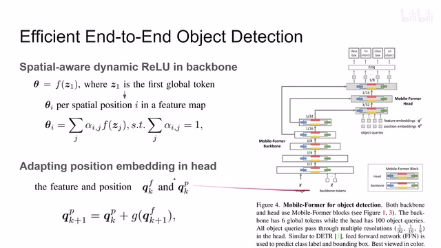
00:11:55–00:11:56 · 画面 05000:11:56–00:12:34 · 画面 051
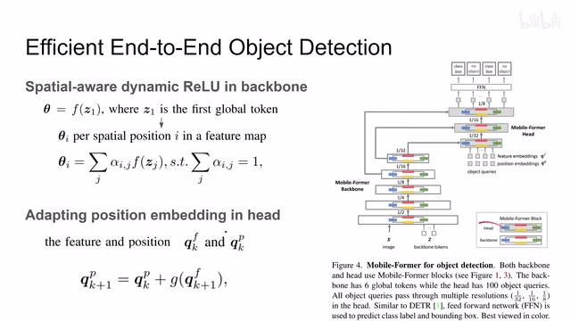
00:11:56–00:12:34 · 画面 051正常来讲，我们是把他们两个加起来送到 Transformer 里面的。那现在呢，再进到下一层的时候呢。作者呢这里加一个 MLP。用它呢把这个 feature 处理一下。处理出来之后呢得到一个对这个 Position Embedding 的这么一个修正。然后呢把他们一同加起来作为我们新的这个 Position Embedding。
就相当于我们这个 Position Embedding 随着我们。这个 Transformer block 它的层次的这个增加。它也是不断的去调整的。那这个呢是作者在这个 Mobile Formal Head 里面的。这么一个改进好的
00:12:34–00:12:38 · 画面 052
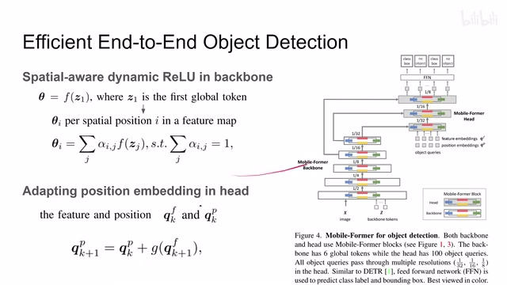
00:12:34–00:12:38 · 画面 052那么以上就是本文的主要的这个技术细节。那么下面我们来看作者汇报一些结果。
00:12:38–00:13:30 · 画面 053
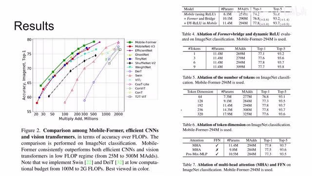
00:12:38–00:13:30 · 画面 053首先呢这个 ImageNet对吧这里这个 Max 和我们的这个 Performance。它的这个对比对吧跑得比谁都快甚至跑得比 MobileNet 还快，为什么呢？当然这个作者后面也有研究啊，是主要是在图像大的时候，本文的方法呢跑得比这个 MobileNet 还快。如果图像小的时候呢，它们的差距就不明显了，甚至有的时候呢这个 MobileNet 会更快一点。这个详细呢，感兴趣的朋友呢去看一下附录。那这边这个 Evolution 啊，比如说 Dynamics 路啊，还有本文的重点一个贡献就是这个 Transformer 还有它们之间的 Bridge。
这个呢产生的提升呢是非常明显的。当然我很好奇啊，如果你只有一个单向的这个 bridge 会怎么样？那还有这边像不同的这个 transformer branch 他们这个 token 的数量的影响还有这个 token 的深度啊等等，感兴趣的朋友呢可以仔细去查看。那么这边过来呢是在 coco 上面一些对比的一些方法。
00:13:30–00:13:48 · 画面 054
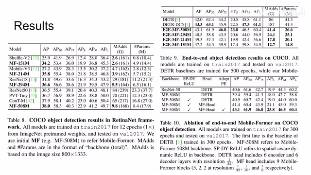
00:13:30–00:13:48 · 画面 054感兴趣的朋友可以仔细的去对照原文查看,包括后面本文的附录里面作者也汇报了很多实验的细节和更多的 ablation。那么以上就是我对这个论文的一个快速的介绍,感谢您的收看,再见。
00:13:48–00:13:48 · 画面 055
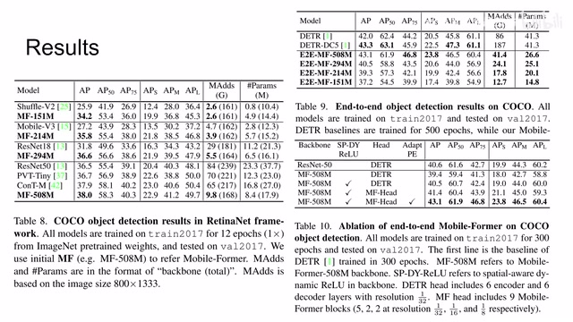
00:13:48–00:13:48 · 画面 055转写与来源说明 · 0 个自动复核提示
保留 54 个原始语音片段，0 个片段触发自动复核提示。提示仅用于定位可能的术语、重复或识别问题，不等于已确认错误。
讲解画面为源视频截图（640×360），不是可编辑 PPT 文件。全片按每秒 2 帧扫描内容变化，逐步展开页保留；连续动画保留代表画面。清晰度受源视频限制。
原视频：paper/合集_2026-10-16_新模型/[论文简析]Mobile-Former Bridging MobileNet and Transformer[2108.05895].mp4
SHA-256：48d3f985509aff7dd4244076e925dea8534a13c55d165b815af1d10ea91c9bcf
全文按视频语音与画面制作。原论文可从上方链接下载；完整资料包保留全文、原始逐字稿、字幕和校对记录。